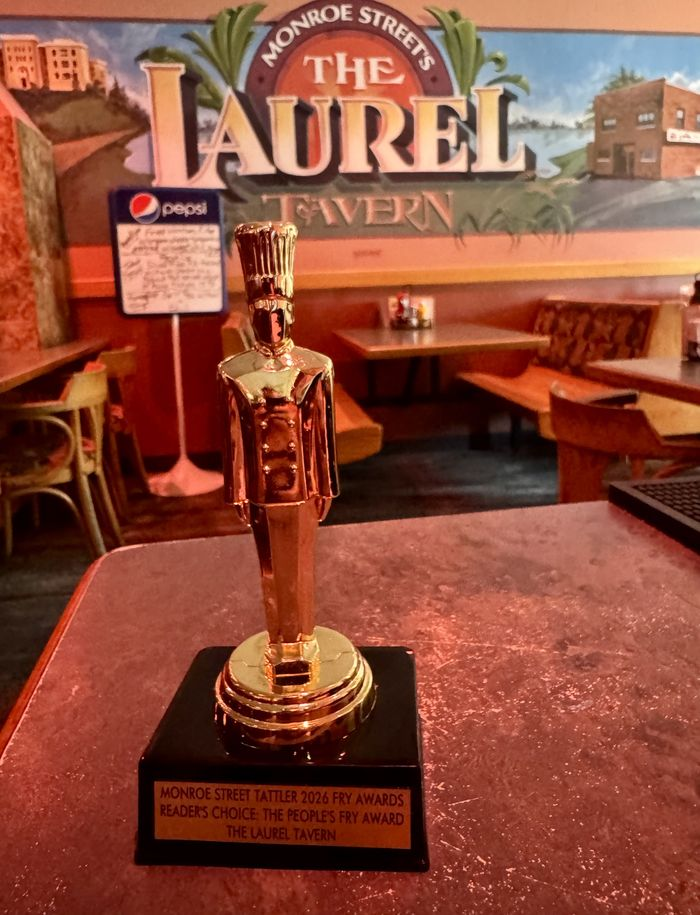
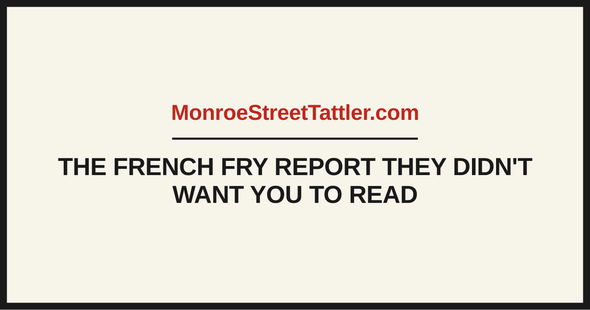

Keep wandering.
Some stories are too important to be forgotten. Others have simply gotten out of hand.

October · The Great Monkey Escape
The Monkeys Are Loose Again
38-Prize Giveaway. One Very Strange October.
Hunt details and printable form →
September · Culinary Commission
We Tried Every Flavor at Chocolate Shoppe So You Don't Have To
The complete tasting record. All 56 flavors, searchable by name.
Read →September · Tattler Impact Report
The Tattler Prize Patrol Hits the Streets
Read →October · Honk Watch
Honk Watch! Friday Toots Raise Questions
Read →September · Neighborhood Listserv
Listserv Finally Justifies Its Existence
Read →
September · Reader submission
A Reader’s Ode to The Laurel
One reader felt so strongly about the honor that he sent us something longer than a letter.
Read →October · Field Report
Ethical Crisis Surfaces Yet Again
Routine trip for eggs becomes crisis of personal morality.
Read →
September · Backyard Athletics
Parenting Arms Race Enters Dangerous New Phase
Read →
Summer · Culinary Commission
The Monroe Street French Fry Report
The french fry report they didn't want you to read, until now. Four parts, three issues.
Read →October · Reader submission
Cult Discovered on Monroe Street
Read →
October · Featured Pet
Lola Would Like to Address the Allegations
Read →
Neighborhood utility
Official Dog Water Bowl & Treat Map
Read →September · Field Report
Dads Gone Wild! Shocks Neighborhood
Read →
September · Around the Neighborhood
Rush Hour Miracle: Motorists Stunned
Read →
October · Public Messaging
Young Signmakers Take Control of Public Messaging
Read →October · Neighborhood
Cat Chaos Grips the Neighborhood
Read →September · Around the Neighborhood
Rare Celebrity Sighting in Vilas
Read →Reader Mail
Romance in Crisis
Dear Barb issues a verdict.
Read →Conduct Your Own Investigation
The Family Ice Cream Investigation Kit
Run your own tasting panel at home. Five flavors, not fifty-six.
Get the kit →Local Intelligence Test
Are You Smart Enough for Monroe Street?
Crossword →October · Shocking Tell All
Librarian Breaks Silence
Neighborhood unprepared.
Read →September 2026
A Matter of Gravy Jurisdiction
Read →August 2026
Governor's Race Yard Sign Enters Period of Instability
Read →August 2026
Curbside Bin Etiquette Enters Difficult New Phase
Read →August 2026
Forgotten Masks Recalled to Active Duty
Read →August 2026
Terrace Free Pile Raises Philosophical Questions
Read →No matching stories. Try another word or choose Everything.